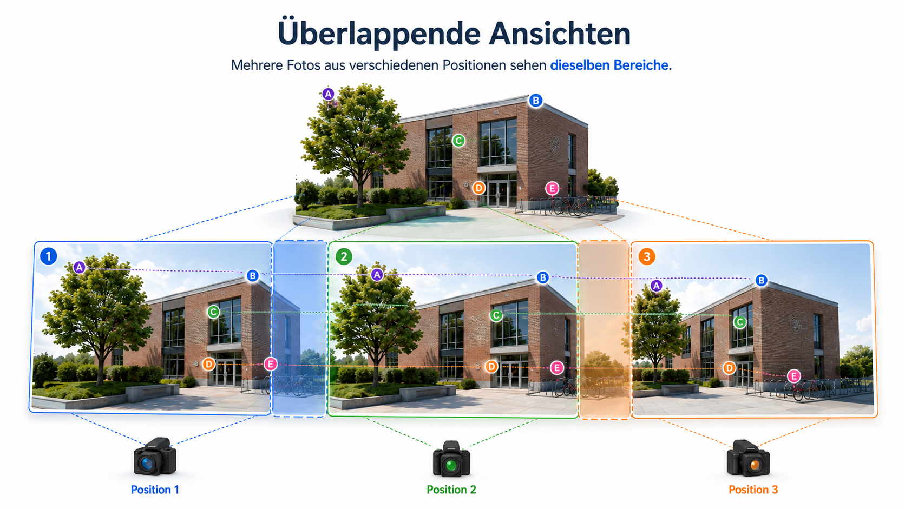
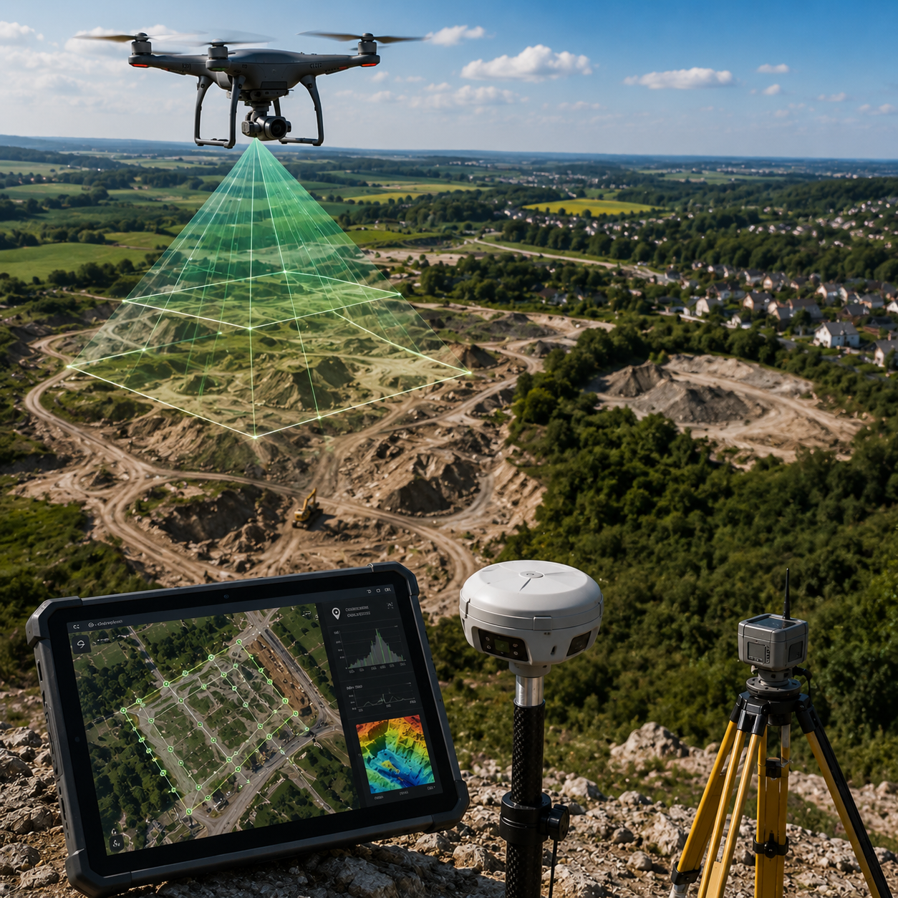
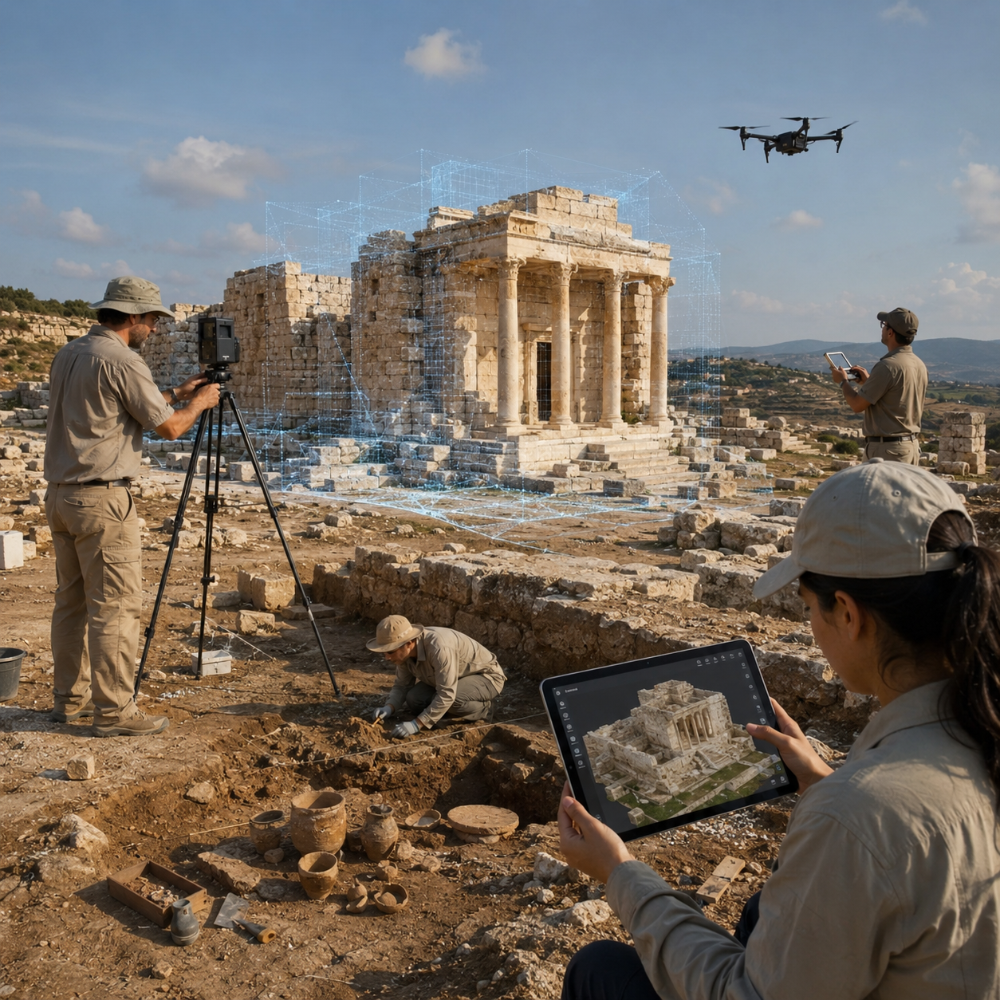
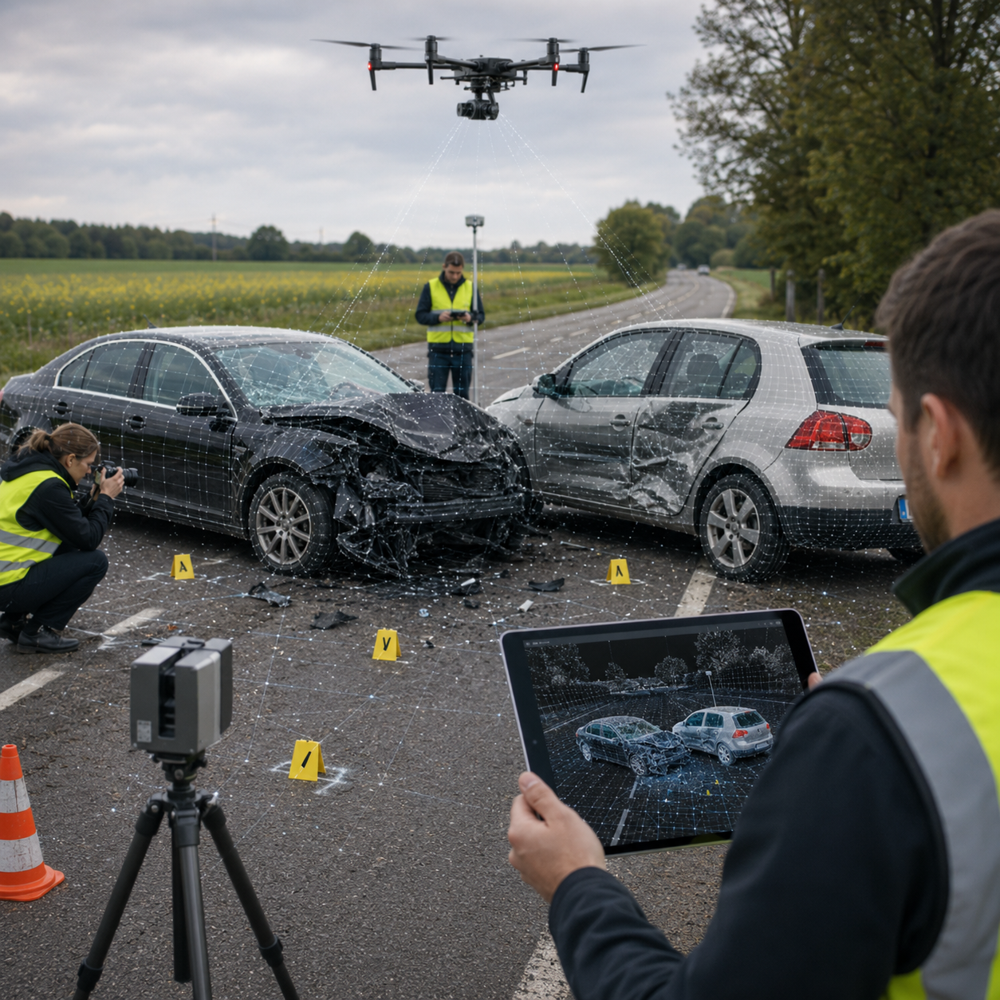
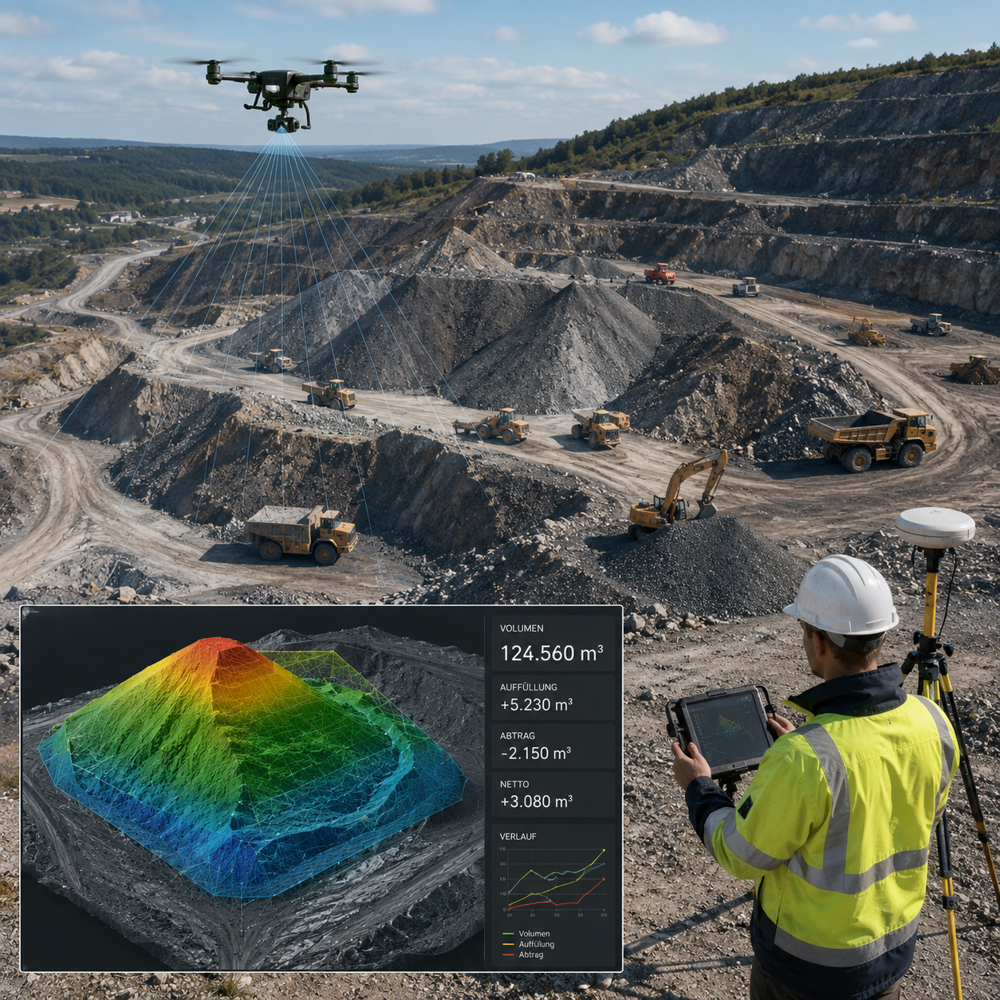
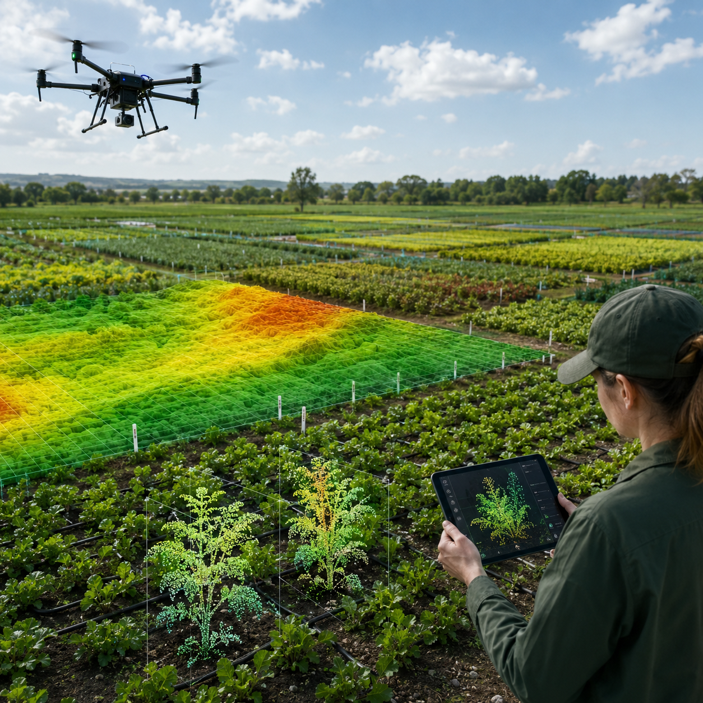

Warum SfM & MVS mehr sind als schöne 3D-Bilder
Structure-from-Motion (SfM) und Multi-View Stereo (MVS) bilden den klassischen photogrammetrischen Weg von vielen überlappenden Bildern zu einem expliziten 3D-Modell. SfM schätzt zuerst, wo die Kameras standen und welche grobe 3D-Struktur sichtbar ist. MVS verdichtet dieses Ergebnis anschließend zu Tiefeninformationen, dichten Punktwolken und Oberflächen.
Der entscheidende Unterschied zu rein visuellen 3D-Verfahren ist nicht der Wow-Effekt, sondern die fachliche Nutzbarkeit: Ein SfM/MVS-Ergebnis kann skaliert, gemessen, annotiert, archiviert und in CAD-, GIS- oder BIM-Workflows weiterverwendet werden. Damit wird aus Fotomaterial eine Datengrundlage für Entscheidungen.

Fotos: Der Schritt sammelt überlappende Ansichten derselben Szene. Die Bilder sind die einzige Informationsquelle für spätere Features, Kameraposen, Tiefenkarten und Geometrie.
Zu wenig Überlappung, Bewegungsunschärfe, starke Belichtungswechsel oder spiegelnde und glatte Oberflächen führen dazu, dass spätere Schritte keine stabilen Bildinformationen finden.
Mit Maßstab, Referenzlängen, RTK/GNSS oder Ground Control Points entstehen Modelle, in denen Distanzen, Flächen, Volumina und Zustandsänderungen ausgewertet werden können. Das macht SfM/MVS für Vermessung, Bau, Forensik und Denkmalpflege deutlich relevanter als eine reine Visualisierung.
Die Pipeline erzeugt prüfbare Zwischenprodukte: Feature-Matches, Kameraposen, sparse Punktwolken, Tiefenkarten, dichte Punktwolken, Meshes und Texturen. Fehler, Lücken oder Ausreißer bleiben dadurch sichtbar und können diskutiert werden.
Viele Workflows starten mit normalen RGB-Fotos von Smartphone, Kamera oder Drohne. Teure Spezialhardware ist nicht zwingend nötig; entscheidend sind gute Aufnahmeplanung, Überlappung, Beleuchtung, Textur und Referenzen.
Dasselbe Grundprinzip funktioniert für kleine Objekte, Fassaden, Baustellen, Grabungsflächen und große UAV-Bildsammlungen. Dadurch eignet sich SfM/MVS sowohl für ein Campus-Beispiel als auch für professionelle Anwendungen.
Die Ergebnisse sind nicht nur zum Anschauen da. Punktwolken, Orthophotos, Geländemodelle und Meshes können als Grundlage für Pläne, Schnitte, Soll-Ist-Vergleiche, digitale Zwillinge oder Karten genutzt werden.
Das Modell bleibt auf seine Primärdaten zurückführbar: die Fotos, Kameras, Referenzen und Verarbeitungsschritte. Das ist wichtig, wenn Ergebnisse später überprüft, archiviert oder in Gutachten, Restaurierung und Planung verwendet werden.
SfM/MVS ist besonders dann stark, wenn aus Fotos nicht nur ein schönes Bild, sondern eine nutzbare 3D-Geometrie entstehen soll. Die folgenden Anwendungsfelder zeigen, warum die Methode in so unterschiedlichen Bereichen eingesetzt wird. Die Genauigkeiten sind bewusst als Größenordnungen formuliert: In der Praxis hängen sie stark von Maßstab, Bildüberlappung, Netzgeometrie, Objekttextur, Referenzpunkten und Qualitätskontrolle ab.

Aus UAV- oder bodengebundenen RGB-Bildern entstehen Orthomosaike, digitale Oberflächenmodelle, Geländemodelle und 3D-Punktwolken. Dadurch lassen sich Flächen, Höhen, Volumina und Veränderungen über die Zeit dokumentieren – auch in schwer zugänglichem Gelände.
Warum SfM/MVS?
Die Rekonstruktion liefert georeferenzierbare, explizite Geometrie. Dadurch wird das Modell nicht nur sichtbar, sondern auch messbar und in GIS- oder CAD-Systemen weiterverwendbar.
Typische Genauigkeit: cm–dm. Gute Ground Control, hohe Überlappung und stabile Bildgeometrie sind entscheidend.
Regelmäßige Fotos einer Baustelle oder eines Bestandsgebäudes können in 3D-Bestandsdaten überführt werden. So lassen sich Baufortschritt, Ist-Zustand und Abweichungen zur Planung räumlich sichtbar machen.
Warum SfM/MVS?
Punktwolken und Meshes können mit geplanten Modellen verglichen werden. Der eigentliche Mehrwert liegt dabei nicht nur im 3D-Modell, sondern in automatisierbarer Fortschrittskontrolle, Nacharbeits-Früherkennung und nachvollziehbarer Dokumentation.
Typische Genauigkeit: cm, abhängig von Maßstab, Referenzpunkten, Bildqualität und Aufnahmeabstand.

Historische Objekte, Fassaden, Grabungsflächen oder Funde können digital gesichert werden. Aus denselben Bilddaten entstehen Orthophotos, Punktwolken, Meshes, texturierte Modelle, Pläne und Profile.
Warum SfM/MVS?
In der Denkmalpflege zählt nicht nur eine anschauliche Darstellung, sondern belastbare Dokumentation. Die Methode ist besonders geeignet, wenn Modelle nachvollziehbar, archivierbar und später erneut vergleichbar sein sollen.
Typische Genauigkeit: mm–cm bei kontrollierten Nahbereichsaufnahmen. Schlechte Netzgeometrie oder zu wenige Referenzen können jedoch sichtbare Deformationen erzeugen.
Brücken, Fassaden, Gleise, Leitungen oder technische Anlagen können berührungslos erfasst werden. Schäden, Risse oder Verformungen lassen sich im 3D-Modell räumlich verorten und mit späteren Aufnahmen vergleichen.
Warum SfM/MVS?
Der Zustand eines Objekts wird nicht nur fotografisch, sondern geometrisch dokumentiert. Das reduziert Risiko bei schwer zugänglichen Bereichen und erleichtert die Kommunikation zwischen Inspektion, Planung und Wartung.
Typische Genauigkeit: cm, abhängig von Abstand, Objektgröße, Bildqualität und Oberflächentextur.

Tatorte oder Unfallstellen können fotografisch dokumentiert und später räumlich rekonstruiert werden. Relevant sind Maßstab, lückenarme Übersichts- und Detailaufnahmen, unveränderte Ausgangsdaten und eine nachvollziehbare Rekonstruktionskette.
Warum SfM/MVS?
Die Methode erzeugt eine dokumentierbare 3D-Szene, in der Abstände, Positionen und räumliche Zusammenhänge später nachvollzogen werden können, ohne die Szene oder das Beweisobjekt physisch zu verändern.
Typische Genauigkeit: cm, bei kontrollierter Nahbereichsdokumentation teilweise genauer. Entscheidend sind Maßstab, Datenkette und Protokollierung.

In Bergbau, Steinbrüchen und Erdbewegungsprojekten werden große Flächen, Halden oder Materiallager wiederholt erfasst. Aus den Fotos entstehen Gelände- und Volumenmodelle, mit denen Bestände und Veränderungen dokumentiert werden können.
Warum SfM/MVS?
Explizite 3D-Geometrie macht Volumen, Geländeänderungen und Materialbewegungen berechenbar. Gleichzeitig reduziert die drohnenbasierte Erfassung Risiken und Unterbrechungen gegenüber manueller Vermessung.
Typische Genauigkeit: cm–dm, abhängig von Flughöhe, Referenzierung, Oberflächenstruktur und Kontrollpunkten.

Feld- und Pflanzenbilder können zu Karten, Höhenmodellen, Vegetationsinformationen oder morphologischen Merkmalen verdichtet werden. Damit unterstützt SfM/MVS sowohl Precision Farming als auch nicht-destruktive Pflanzenforschung.
Warum SfM/MVS?
Die Methode macht räumliche Struktur ohne destruktive Messung erfassbar. Dadurch können Pflanzenwachstum, Bestandshöhe oder Versuchsflächen wiederholt und vergleichbar dokumentiert werden.
Typische Genauigkeit: cm bis sub-cm im Nahbereich, abhängig von Maßstab, Textur, Wind, Beleuchtung und Referenzierung.
3D-Rekonstruktionen können als Trainingsdaten, Referenzgeometrie, Mapping-Grundlage oder Ausgangspunkt für digitale Szenen dienen. In XR-Anwendungen helfen sie, reale Orte in interaktive Umgebungen zu übertragen.
Warum SfM/MVS?
Explizite Geometrie ist eine robuste Grundlage für Analyse, Annotation, Simulation und weitere Verarbeitungsschritte. Besonders in Robotik und XR wird dichte Rekonstruktion aus mehreren Ansichten zur Grundlage für Mapping und räumliches Verständnis.
Typische Genauigkeit: variabel, abhängig vom Ziel des Workflows. Für Navigation und Visualisierung gelten andere Anforderungen als für metrische Vermessung.
SfM und MVS sind keine veralteten Methoden, sondern die richtige Wahl, wenn aus Fotos belastbare Geometrie entstehen soll. Die nachvollziehbare Pipeline, die prüfbaren Zwischenergebnisse und die direkte Anschlussfähigkeit an Fachworkflows machen sie besonders wertvoll für Vermessung, Bauwesen, Infrastruktur, Kulturerbe, Forensik, Landwirtschaft, Bergbau und als Vorverarbeitungsschritt für KI-, Robotik- und XR-Verfahren.